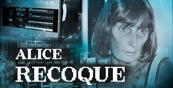

Ses réalisations
Direction du projet Mitra 15
Mini-ordinateur industriel emblématique du Plan Calcul, utilisé pour contrôler les centrales nucléaires, les missiles, des robots, des expériences scientifiques, des réseaux comme Cyclades

Développement du CAB500
Un des premiers ordinateurs de bureau français, utilisé pour des calculs scientifiques et de l'informatique conversationnelle

Direction de la mission « Intelligence artificielle » chez Bull
À partir de 1984–1985, direction des recherches en intelligence artificielle au sein du groupe Bull, en lien avec l'Inria et d'autres organismes publics